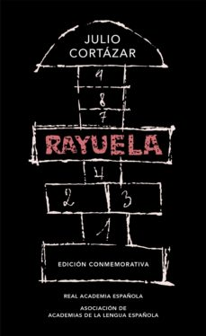

Libros de Realismo Mágico

Rayuela
Por primera vez se edita «Rayuela» como un clásico de la novela contemporánea. Todo el conjunto de materiales que aporta esta edición (introducción, abundantes notas, plano, fotografías) servirán al lector para comprender mejor y disfrutar más con esta gran novela. Al aclararse tantas alusiones y técnicas narrativas, resplandece con más claridad el sentido profundo del relato: la búsqueda constante, el humor, el juego, la nostalgia de una verdadera vida, el paso soñado «de la tierra al cielo»…

Crónica negra
Muchos años después, frente al pelotón de fusilamiento, el coronel Aureliano Buendía había de recordar aquella tarde remota en que su padre lo llevó a conocer el hielo. Macondo era entonces una aldea de veinte casas de barro y cañabrava construidas a la orilla de un río de aguas diáfanas que se precipitaban por un lecho de piedras pulidas, blancas y enormes como huevos prehistóricos. El mundo era tan reciente, que muchas cosas carecían de nombre, y para

Novela ilustrada
Kafaka Tamura se va de casa el día que cumple quince años. Los motivos, si es que los hay, son las malas relaciones con su padre -un famoso escultor convencido de que su hijo repetirá el aciago sino de Edipo de la tragedia clásica- y la sensación de vacía producida por el abandono de su madre y su hermana. Sus pasos le llevarán al sur de Japón, a Takamatsu, donde encontrará refugio en una peculiar biblioteca. Si sobre la vida de Kafka se cierne la tragedia (en el sentido clásico), sobre la de Satoru Nakata ya se ha abatido: de niño, durante la II Guerra Mundial, sufrió un extraña accidente del que salió sumido en una especie de olvido de sí, con dificultades para comunicarse. A los 60 años, abandona Tokyo y emprende un viaje que le conducirá, como a Kafka, a la biblioteca de Takamasu. Así, vidas y destinos, destinos y pesadillas se van entretejiendo en un curso inexorable que no atiende a razones ni a voluntades.